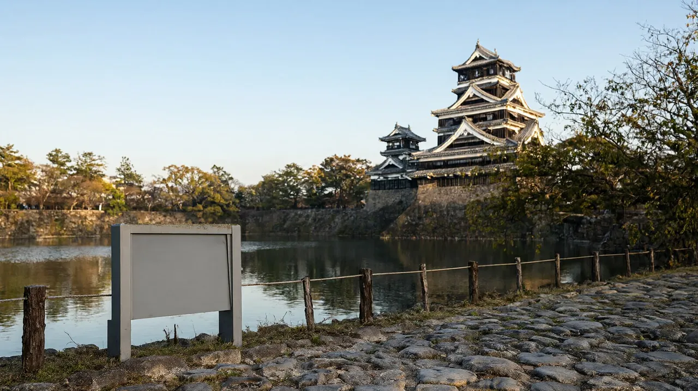

구마모토 지진 이후 여행 가능 여부와 확인 방법
7월 지진 뒤 구마모토 여행 가능 여부를 시설별 확인일과 공식 링크, 확인 순서로 정리

확인일: 2026-10-22 (목) 최신 확인, 다음 전체 확인 예정 2026-11-05 이 글의 상태 정보는 이 날짜 기준입니다. 상황은 자주 바뀌므로 출발 전과 당일 아침에 아래 공식 링크로 다시 확인하세요.
핵심 요약
- 2026년 7월 28일 오후 구마모토현에 강한 지진이 있었고 진원은 구마모토시 남쪽이었습니다. 피해는 지역별로 달랐고 일부 지역에 사망자와 기반 시설 피해가 있었습니다 (재팬가이드).
- 구마모토시, 구마모토성, 아소, 구로카와는 큰 피해를 피해 대부분의 관광지와 숙소가 정상 운영 중이라는 안내입니다 (재팬가이드, 2026-10-19 갱신). 다만 이는 비공식 안내입니다.
- 아소산은 지진과 별개로 분화경계 레벨 2이며 분화구는 볼 수 없습니다 (아소 화산 방재 공식 안내, 2026-10-22 확인).
- 구마모토성과 구로카와 온천의 공식 사이트는 2026-10-22에 점검 중이라 직접 확인하지 못했습니다.
시설별 운영 상태 (확인일 2026-10-22)
| 대상 | 상태 | 확인한 곳 | 확인일 | 비고 |
|---|---|---|---|---|
| 구마모토시 | 시 공식 자료(8월 초 보고)로 사망자 0명, 단수·탁수는 8월 3일 해소, 동식물원·박물관·시립도서관·구마모토성 홀은 8월 4~5일 재개. 시 공식 사이트 첫 화면에 지진 관련 공지가 계속 올라 있음(10월 20일자 피난민 안내 등) | 구마모토시 공식 사이트, 재팬가이드 | 2026-10-22 | 8월 초 자료라 시설별 현재 운영은 시설 공식 사이트로 확인 |
| 구마모토성 | 약간의 피해 후 8월 13일 재개방. 천수각 안 9:00~17:00, 입장 16:00까지, 800엔. 본마루 어전은 닫힘 | 재팬가이드 (비공식) | 2026-10-22 | 공식 사이트가 점검 중(503)이라 직접 확인 못함 |
| 수이젠지 정원 | 재개방 안내. 연중무휴 8:30~17:00 (입장 16:30까지), 16세 이상 500엔, 6~15세 200엔 | 수이젠지 성취원 공식 사이트, 재팬가이드 | 2026-10-22 | 행사 때 시간이 달라질 수 있다고 공식 안내 |
| 아소 분화구 | 접근 불가. 분화경계 레벨 2, 분화구 약 1km 안 출입 금지. 도로와 등산로 폐쇄 | 아소 화산 방재 공식 사이트, 재팬가이드(10-01 갱신) | 2026-10-22 | 공식 문구: 1차 규제 중 |
| 아소 초원과 일반 관광지 | 큰 피해 없이 대부분 정상. 아소 화산박물관은 공식 사이트에 9:00~17:00(최종 입관 16:30)로 게시, 산상 터미널은 9:00~16:30 | 재팬가이드 (비공식), 아소 화산박물관·산코버스 공식 사이트 | 2026-10-22 | 그 밖의 시설은 개별 확인 |
| 국도 57호 북쪽 복구도로 | 아소니시IC~오쓰IC는 10월 19일 밤~24일 아침, 10월 28일 밤~31일 아침 매일 21:00~6:00 통행금지. 예비일 11월 2~14일 밤 | 국토교통성 구마모토 하천국도사무소 공지 | 2026-10-22 | 우회로는 공지 별지 지도 참고. 밤 시간 이동을 피하면 영향 적음 |
| 구로카와 온천 | 큰 피해 없이 대부분 숙소와 시설 정상 | 재팬가이드 (비공식) | 2026-10-22 | 공식 사이트 점검 중. 문의 전화 0967-44-0076 (조합 안내문) |
| 규슈 신칸센 | 9월 18일 전 구간 재개 | 재팬가이드, JR 규슈 공지 | 2026-10-22 | 당일 운행은 JR 규슈 운행 정보 확인 |
| 지진 영향 지역 철도 | 10월 13일까지 모두 재개 | 재팬가이드 (비공식) | 2026-10-22 | 호선별 운행은 JR 규슈 확인 |
| 구마모토공항 | 8월 2일, 3일자 지진 영향과 2차 교통편 안내 공지가 올라 있음. 10월 21일 공지로 11월 1일 리무진 시간표 개정 | 구마모토공항 공식 사이트 | 2026-10-22 | 국제선은 10월 운항표(10월 25~31일 포함)에 인천 2왕복과 부산 1왕복이 매일 운항으로 올라 있음 |
확인 순서 (출발 전 10분)
- 항공: 구마모토공항 공식 사이트의 국제선 출발·도착 운항표와 항공사 사이트에서 편명을 확인합니다. 공항 공지의 교통 사업자 링크도 봅니다.
- 공항에서 시내 이동: 공항 공지의 2차 교통편 상황과 산코버스 시간표를 확인합니다. 11월 1일부터 시간표가 바뀝니다.
- 철도: JR 규슈 운행 정보에서 이용할 구간의 운행 여부를 봅니다.
- 구마모토시와 구마모토성: 구마모토시 공식 사이트와 구마모토성 공식 사이트에서 개방 구역과 휴관 공지를 봅니다.
- 아소: 아소 화산 방재 공식 사이트에서 분화경계 레벨과 출입 규제를 봅니다. 아소 방문 당일 아침에 한 번 더 봅니다.
- 구로카와: 구로카와 온천 공식 사이트나 예약한 료칸에 직접 영업과 도로 상황을 문의합니다.
- 마지막으로 여행 중에는 매일 아침 숙소 안내와 일기 예보, 도로 상황을 봅니다.
출발 전 확인할 공식 링크
| 대상 | 링크 | 2026-10-22 열람 결과 |
|---|---|---|
| 구마모토공항 | https://www.kumamoto-airport.co.jp/en/ | 열림. 지진 관련 공지 확인 |
| 철도 (JR 규슈) | https://www.jrkyushu.co.jp/english/ | 열림. 운행 정보 링크와 신칸센 전 구간 복구 공지 |
| 아소 분화구 | https://www.aso-volcano.jp/info/ | 열림. 레벨 2, 1km 출입 금지 |
| 구마모토성 | https://castle.kumamoto-guide.jp/en/ | 2026-10-22에도 점검 중(503)으로 열리지 않음. 요금·시간은 검색에 남은 공식 안내 페이지로 확인했고, 개방 구역과 휴원 공지는 확인 필요 |
| 구로카와 온천 | https://www.kurokawaonsen.or.jp/eng/ | 영문 첫 화면은 점검 중으로 열리지 않음. 일본어 입욕 순례권 안내 페이지는 열림. 영업 현황 공지는 확인 필요 |
| 구마모토시 | https://www.city.kumamoto.jp/ | 열림. 첫 화면에 지진 관련 공지(10월 20일 피난민 안내, 9월 29일 피해자 지원 제도 안내 등) 확인 |
| 공항버스 | https://www.sankobus.jp/bus/ap-limousine/jikoku/ | 허브 조사에서 확인한 시간표. 11월 1일 개정 |
비공식 참고: 재팬가이드 긴급 안내 https://www.japan-guide.com/news/alerts.html (2026-10-19 갱신)
가족 여행 판단 기준
- 시내 중심 일정(구마모토성, 시내)은 현재 안내상 가능합니다.
- 아소는 초원과 일반 관광지는 갈 수 있지만 분화구는 불가합니다. 분화경계가 올라가면 초원 구역도 영향을 받을 수 있으니 당일 아침 확인을 일정에 넣으세요.
- 렌터카 이동은 도로 통제 가능성이 있어 예비 일정(시내 중심)을 하나 준비하세요.
- 숙소는 예약 시 영업 상황과 취소 규정을 함께 확인하세요.
같이 보면 좋은 글
- 구마모토 3박 4일 가족 일정
- 구마모토 여행 가이드
- 구마모토공항에서 시내까지 (kmj-airport-to-city)
- 아소·구로카와 렌터카 일정 (kumamoto-aso-kurokawa-rentcar)
확인 필요 항목
- 구마모토성 공식 사이트의 개방 구역과 휴원 공지 (2026-10-22 점검 중 503으로 열리지 않음. 같은 날 1:00~5:00 점검 예정 문구가 있었음)
- 구로카와 온천 공식 사이트의 영업 현황 공지 (영문 첫 화면 점검 중, 순례권 안내만 확인)
- 구마모토시 공식 사이트의 8월 이후 시설별 운영 현황 (시 공식 자료는 8월 초 보고까지 확인)
- 11월 이후 구마모토공항 국제선 겨울 편성 (공항 운항표에 10월 31일까지만 게시)
- 철도 호선별 현재 운행 상황 (당일 확인)
확인 방법과 출처
- 확인 방법: 위 링크를 순서대로 열어 날짜와 갱신 시각을 확인합니다. 갱신일이 오래된 안내는 믿지 말고 전화나 숙소 문의로 보완합니다.
- 공식 출처: 아소 화산 방재 안내 https://www.aso-volcano.jp/info/ , 구마모토공항 https://www.kumamoto-airport.co.jp/en/ , JR 규슈 https://www.jrkyushu.co.jp/english/
- 비공식 출처: 재팬가이드 https://www.japan-guide.com/news/alerts.html , https://www.japan-guide.com/e/e4501.html , https://www.japan-guide.com/e/e4552.html